Bruin Bash 2014
Every Fall UCLA welcomes 20,000 students with Bruin Bash, a night of free concerts, films, and festival activities. I worked with Campus Events Commission to create a consistent yet flexible identity for the marketing campaign. I also created promotional graphics for a wide range of media including t-shirts, posters, the event site, and facebook.
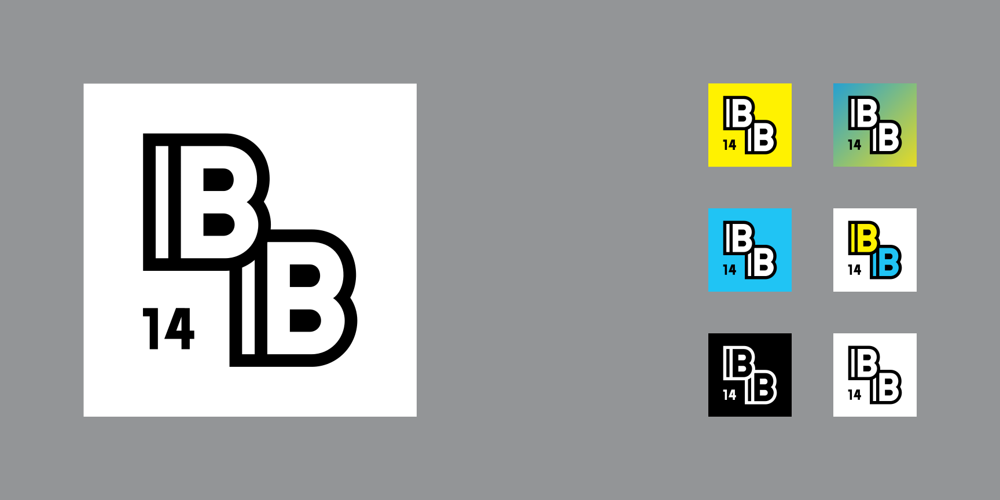 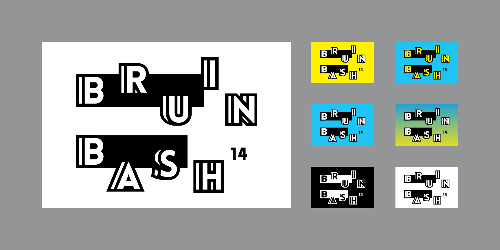 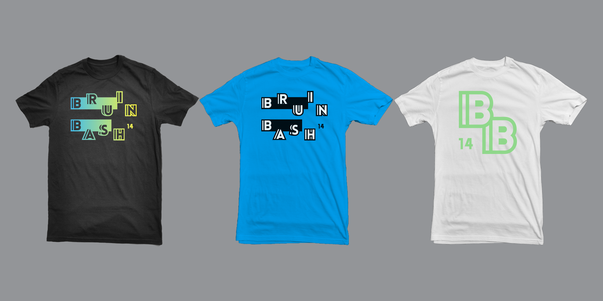 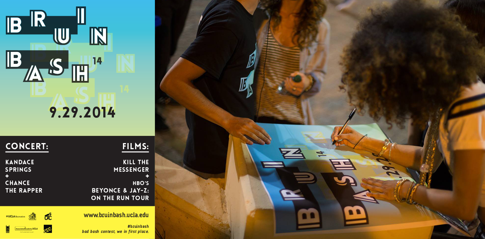 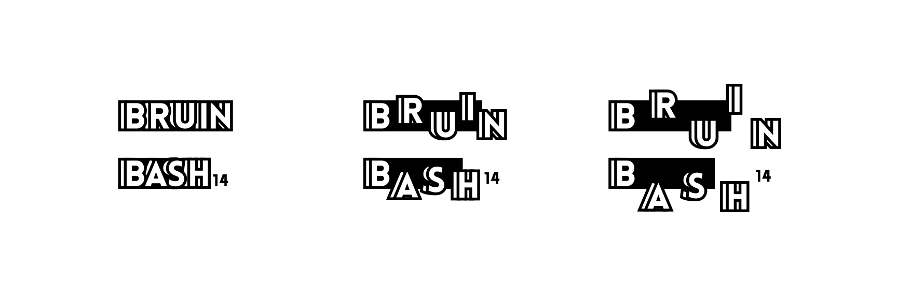 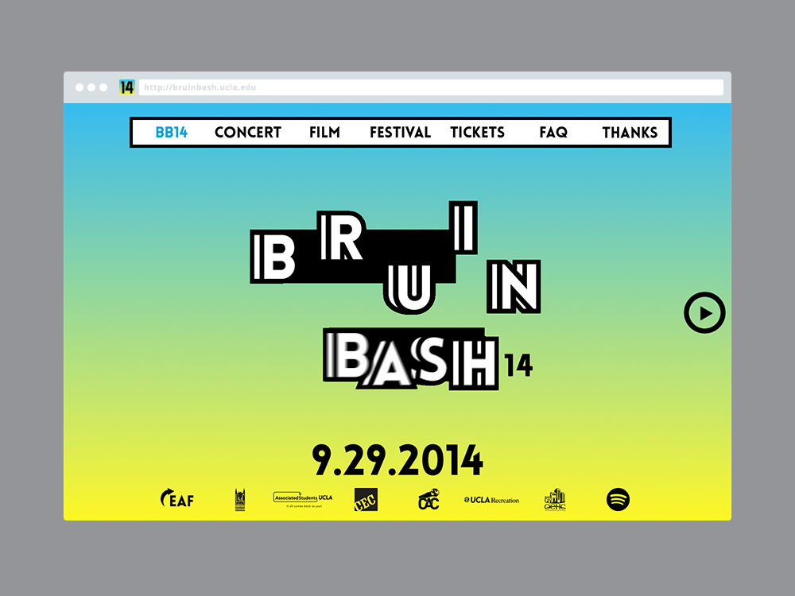
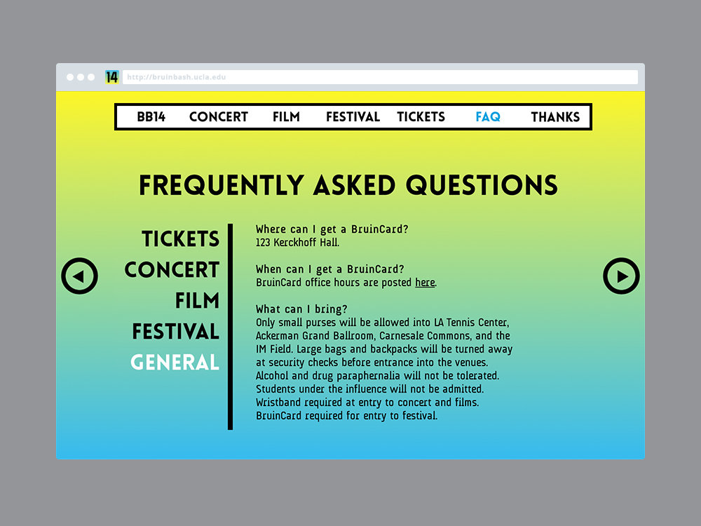
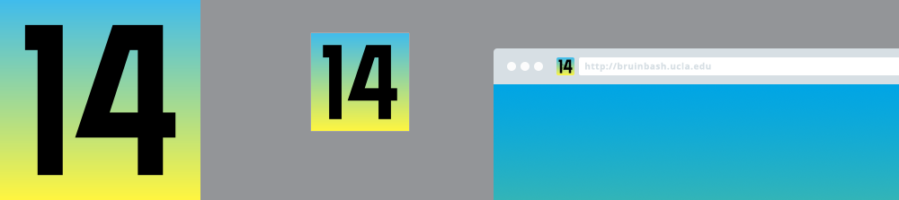
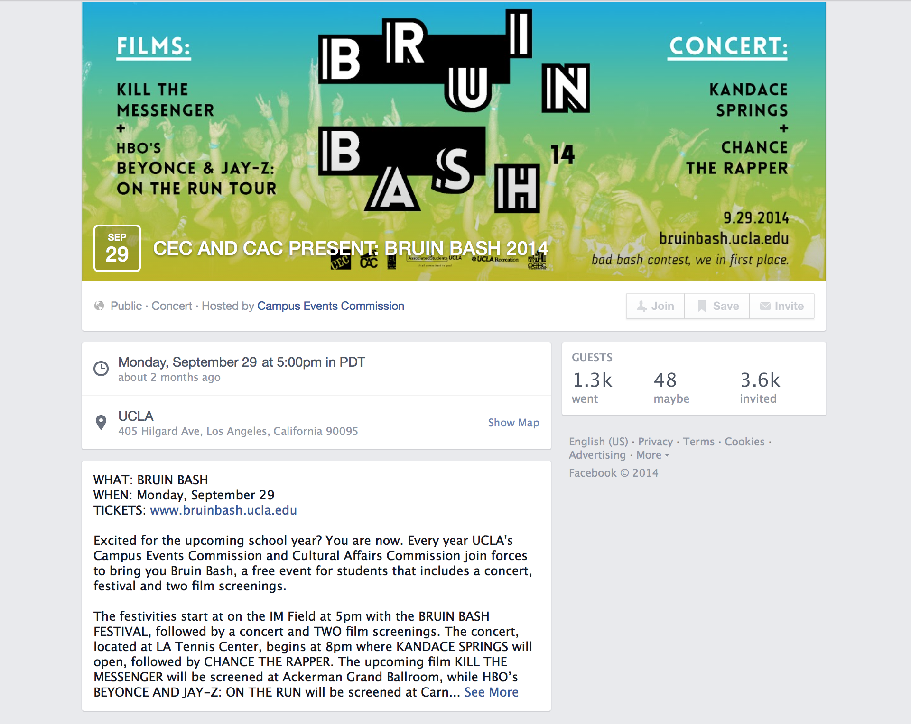
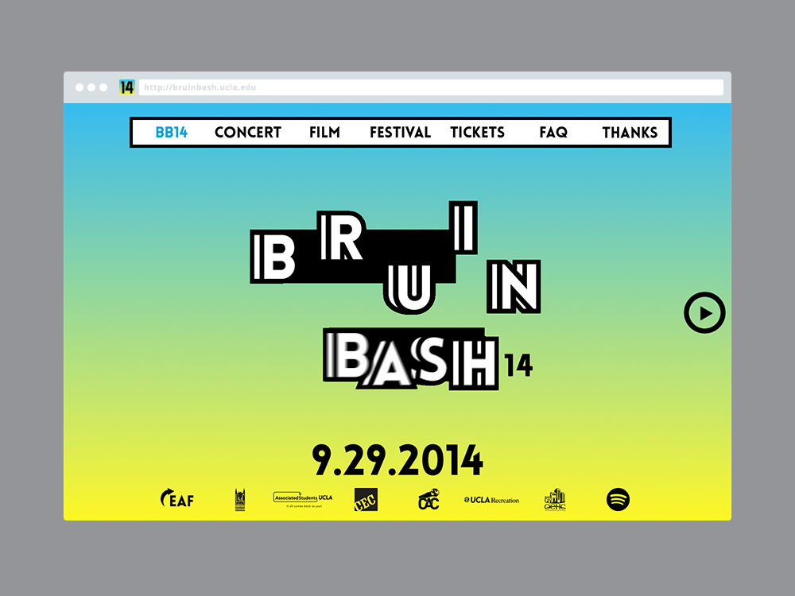
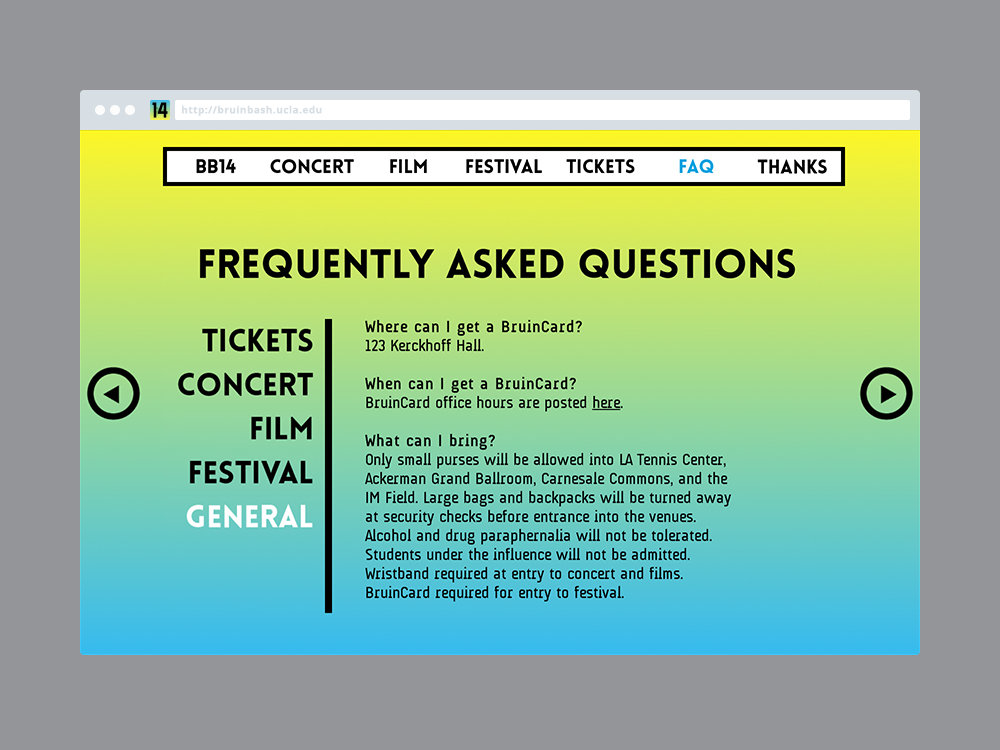
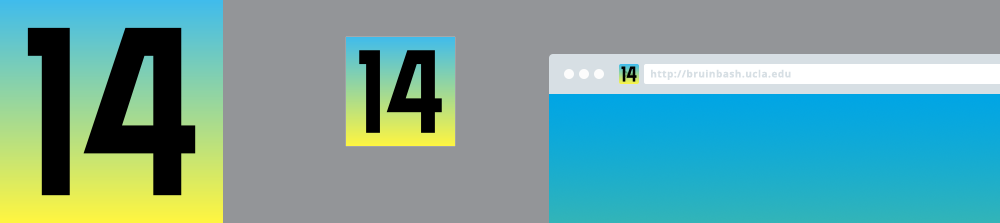
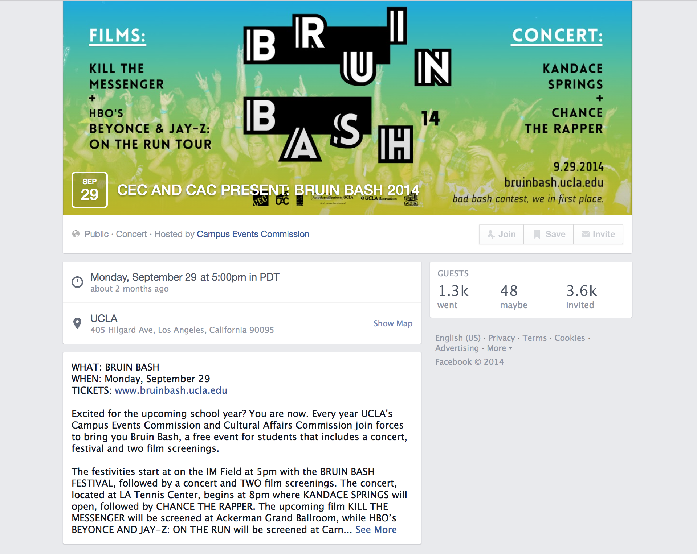
TOOLS:
Illustrator, Photoshop, Indesign, AfterEffects
CREDITS:
Creative Direction & Web Design – Rebecca Rusheen
Web Development – Katie Shannon
Photography – Andy Tran
Campus Events Commission
AUdimat font – SMeltery